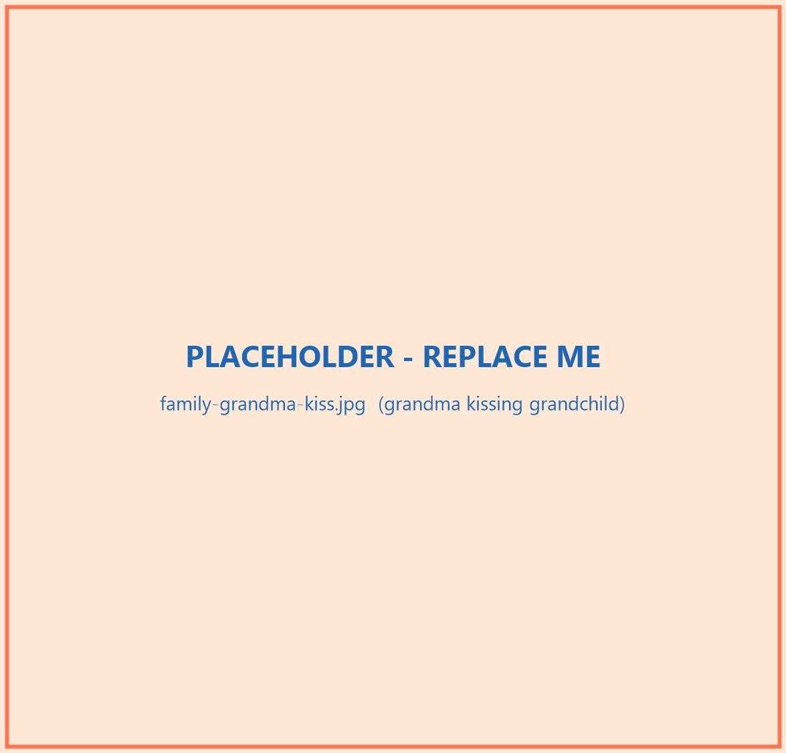
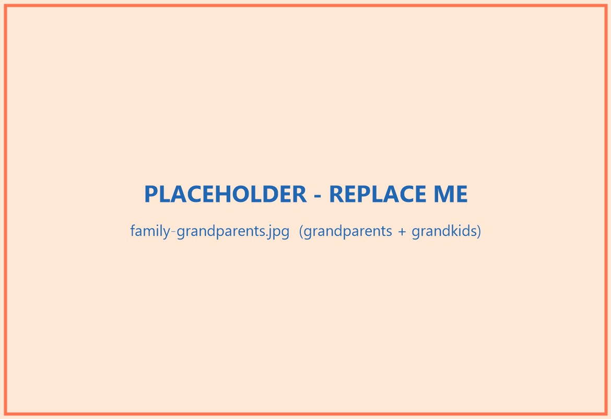

Pre-launch care technology with launch-ready commitments
Connected care at home.
SeniorConnex connects a vitals watch, privacy-first room sensors, video check-ins, and caregiver alerts into one calm view for the people caring for an older adult.

The home stays familiar. The care circle gets clearer.
SeniorConnex is designed around a real home, not a lab. Cameras can support common spaces. Radar handles the private rooms. The watch fills in vitals. The app turns all of it into plain language.
From a quiet signal to the right response.
The system is built for proactive care: notice changes early, route urgent alerts fast, and keep the care circle aligned.
Sense the pattern
Radar, cameras where appropriate, and the watch read presence, movement, falls, activity, rest, and vitals.
Separate normal from concerning
The platform compares frequent readings and routine behavior so families see changes before they become a crisis.
Alert the right person
Falls and urgent deviations route by text to the family, caregiver, or care team based on the escalation path.
Keep everyone in the loop
Every person caring for the senior works from the same shared view, with video connection when a human voice matters.

A complete care kit, not another single gadget.
The watch, room sensors, bedside tablet, family app, and caregiver portal are sold together as one supported system.
- Vitals watch for frequent biometric readings
- Two to four home sensors based on privacy needs
- Bedside video tablet for one-tap calls
- Family and caregiver views in any web browser

Built for seniors first, sold to the people who care for them.
Adult children and caregivers need a clearer picture. Seniors need dignity, privacy, and the freedom to keep familiar routines. SeniorConnex is designed to protect both sides of that promise.